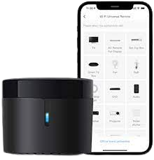
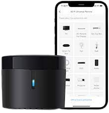

Broadlink RM4 Mini IR
Broadlink RM4 Mini IR
Broadlink RM4 Mini IR
Broadlink RM4 Mini IR
Prezzo: 32,9€
Broadlink RM4 Mini IR è un dispositivo totalmente assente dalla
parte di Apple. È disponibile solo con Alexa e ha delle funzioni davvero molto interessanti.
È capace di riconoscere tutti i dispositivi ad infrarossi che lo circondano come TV, Condizionatori, e tutto ciò
che ha un telecomando ad infrarossi. Messo nella posizione giusta in casa non potrai più farne a meno.
 
